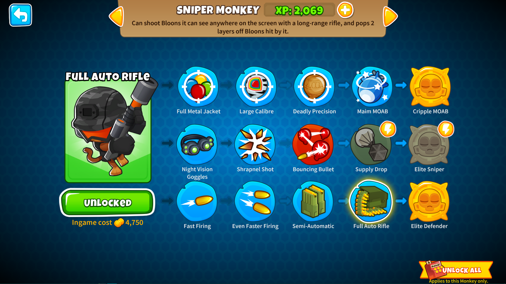
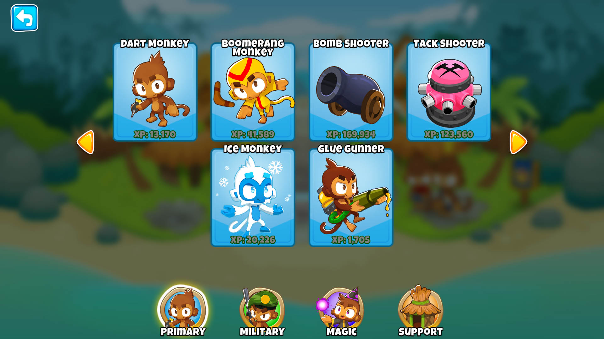
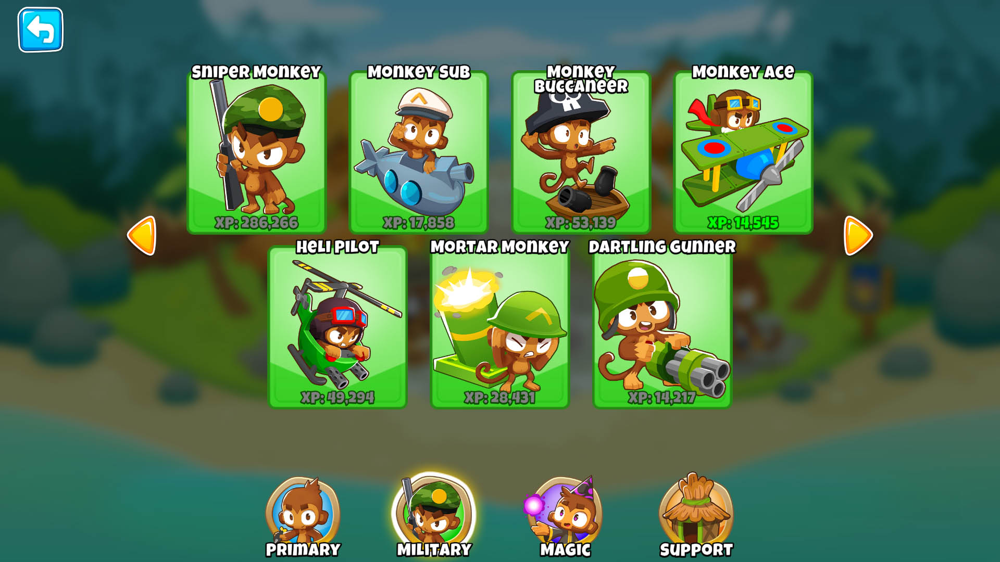
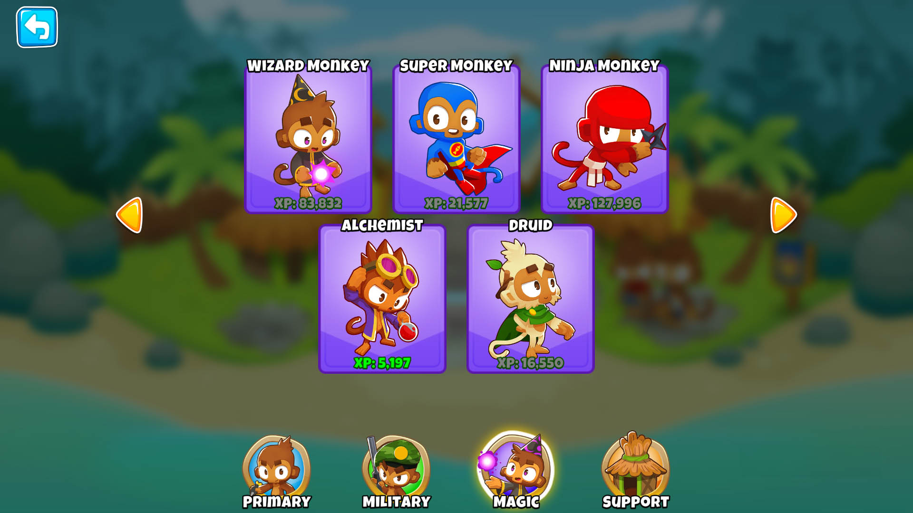
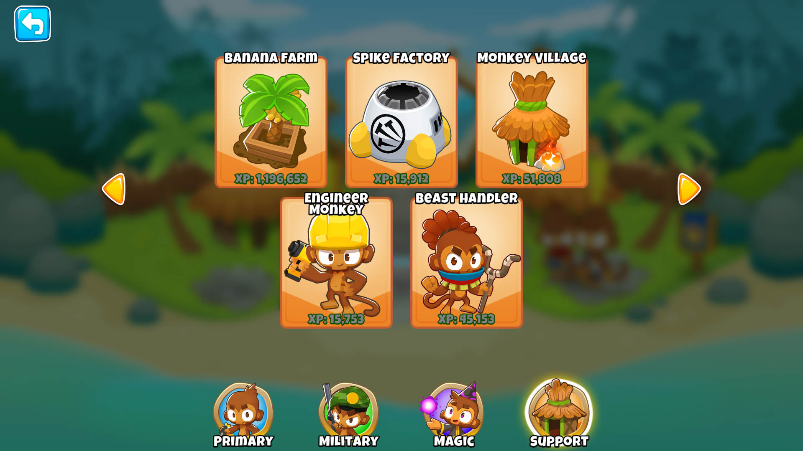
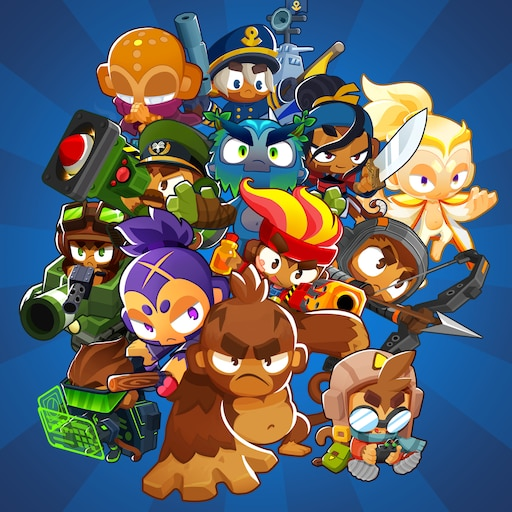

Monos y Torres
Las torres en Bloon TD 6 no parecen torres en el sentido tradicional, pero aún tienen esa funcionalidad. En lugar de torres en el sentido físico, la mayoría son monos. Cada mono requiere XP para desbloquear sus mejoras y monedas dentro de las rondas para aplicarlas. Hay cinco mejoras en total que se pueden aplicar por ruta completa del mono más dos de una ruta de bonificación y algunas tienen una mejora de modelo que está disponible una vez que tienes todas las demás actualizaciones. Sin embargo, puedes elegir mezclar y combinar dos caminos diferentes
Actualmente los juegos más recientes ("Bloons TD6" y "Bloons TD Battles 2") cuentan con 21 torres, cada una con tres caminos totalmente diferentes los cuales se pueden combinar. Todas las torres que no son héroes están separados en categorías: Primaria, Militar, Mágica y de Apoyo.
Primarios
Las torres primarias son las mas antiguas dentro de la saga de Bloons TD y no solo sirven para defenderse de los bloons si no que tambien pruden brindar apoyo congelandonos temporalmente o realentizandolos. Las tores primarias se destacan por su versatilidad, bajo coste y por ser intuitivas y fáciles de usar, esta categoria esta conforada por:
- El Mono Dardero
- EL Mono Boomerang
- El Cañón
- La Tiratachuelas
- EL Mono de Hielo
- El Artillero Pegajoso
Militares
Los monos militares son la segunda división de monos, se identifican con el color verde, esta división cuenta con monos aéreos, acuáticos y terrestres. Los monos militares se destacan por su amplia variedad de usos en el campo de batalla, su alto rango de ataque y por su capacidad de detectar Bloons camuflados y de hacer mucho daño en poco tiempo. Esta categoria esta compuesta por:
- El Mono Francotirador
- El Mono Mortero
- El Mono Artillero
- El Mono Submarino
- El Mono Helicoptero
- El Mono Avión
Mágicos
Los monos mágicos son la tercer categoria de monos, se pueden identificar con el color violeta y esta conformada por los monos más caros, los cuales todo usan tipo de proyectiles, desde shurikens hasta rayos lásers. Los Monos Mágicos se destacan por su gran poder y por ser más fuertes mientras mas de estos hayan en el mapa. Esta categoria esta conformada por:
- El Supermono
- EL Mono Ninja
- El Mono Druida
- El Mono Mago
- El Mono Alquimista
Apoyo
Los monos de apoyo son la cuarta y última categoria de torres y se identifican conn el color amarillo. Los monos de esta categoria se caracterizan por poder generar dinero, "buffear" a otras torres, eliminarle el camuflaje y el blindaje a los Bloons y por tener mecanicas poco comunes como por ejemplo poner otras torres alrededroe suyo. Esta categoria esta compuesta por:
- La Mono Aldea
- La Granja de Bananas
- El Mono Ingeniero
- La Fábrica de Clavos
- El Domador
En conclusión es importante tener un equipo balanceado con varios monos de diferentes categorías, ademas de que tambien se recomienda tener varias veces el mismo mono pero con diferentes mejoras. Esto te obliga a ir probando todas las diferentes torres y encontrar tu manera de jugar y a tus monos favoritos para defenderte de los bloons y de los M.O.A.Bs.
Héroes
Los Héroes aparecieron por primera vez en Bloons Tower Defense 6. Ellos son una serie de torres muy poderosas que tienen ataques y habilidades únicas. El jugador solo puede elegir uno de estos héroes por partida y a diferencia de los monos solo un héroe puede ser colocado en el mapa y en ves de tener diferentes caminos tienen niveles que van subiendo a medida que van matando bloons. actualmente Bloons TD 6 cuenta con 14 héroes los cuales son:
- Gwendolin
- Quincy
- Capitana Churchill
- Ezili
- Psi
- Etienne
- Benjamin
- Sauda
- Adora
- Geraldo
- Striker Jones
- Obyn Greenfoot
- Almirante Brickell
- Pat fusty